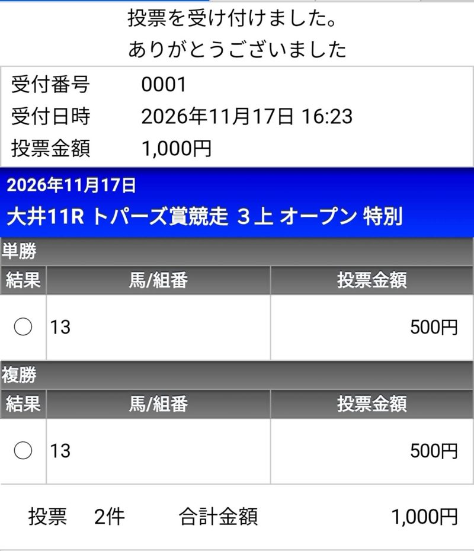

前日成績
11/16 大井11R オフト大郷賞 ◎4 ホウオウカブキは3着でした。複勝が的中して、1,000円→600円です。
当日予想
2026/11/17(火) 大井11R トパーズ賞（3歳上オープン特別）
20:10発走、ダート1400m、14頭立てです。
◎13 フルム 和田譲
１３ 単勝 ５００円
１３ 複勝 ５００円
大井のオープン特別では近3走が1着・2着・5着と安定しています。1400mは今年4月に大井で1分25秒1の好時計で2着があり、1200m中心でも距離はこなせます。鞍上の和田譲は近5走すべてに騎乗していて手が合っています。1番人気でも、単複で手堅くいきます。

＜本年成績＞
中央 213戦26勝 291,400円→181,380円 -110,020円 62%
地方 10戦3勝 10,000円→13,600円 +3,600円 136%
払戻"金"投資 108,020円→96,419円 -11,601円 -10.74%